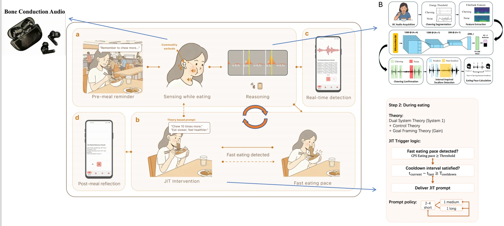

Earinter: A Closed-Loop System for Eating Pace Regulation with Just-in-Time Intervention Using Commodity Earbuds
Using commodity earbuds to sense chewing, estimate eating pace, and deliver theory-grounded, just-in-time audio prompts during daily meals.
Summary
Earinter connects bone-conduction sensing, on-device reasoning, and just-in-time audio feedback to support eating-pace regulation in daily meals. Its design draws on Dual Systems Theory and two Wizard-of-Oz pilots. A 13-day within-subject field study with 14 participants found increased chews per swallow and slower meal-level eating pace, with generally favorable comfort and usability. These results concern eating-pace regulation rather than evidence of weight loss.
Proceedings of the ACM on Interactive, Mobile, Wearable and Ubiquitous Technologies, 10(3), September 2026, pp. 1–36
BibTeX
@article{fang2026earinter,
author = {Fang, Jun and Chan, Ka I. and Zhang, Xiyuxing and Wang, Yuntao and Gao, Mingze and Peng, Leyi and Li, Jiajin and Zhan, Zihang and Zhao, Zhixin and Shi, Yuanchun},
title = {Earinter: A Closed-Loop System for Eating Pace Regulation with Just-in-Time Intervention Using Commodity Earbuds},
journal = {Proceedings of the ACM on Interactive, Mobile, Wearable and Ubiquitous Technologies},
volume = {10},
number = {3},
pages = {1--36},
month = sep,
year = {2026},
doi = {10.1145/3831629}
}